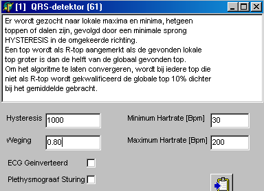

|
Bloeddruk analyse Voor zowel Finapres als inter-arteriele druk wordt functie 54 gebruikt met dezelfde instellingen. De standaard instellingen, zoals hiernaasr weergeven voldoen goed. |
|
Meetsystemen CRCN (pnr 032703)
FF2-firmware = V6/V4 (geen ondersteuning 1000 Hz)
Ingangssignalen & Kalibratie
|
Kalibratie als Modificatie 1 = versterking van de voorversterkers 5* verhoogd (1kOhm --> 210 Ohm) en Modificatie 2 = Brugspanning door LDO (3.3V --> 3V) Dit geldt niet voor de onveilige kanalen 9 t/m 13 !!! |
||
|
Signaal |
Kalibratie |
Opmerkingen |
|
1 = Druk |
20 / 63 / 120 / 210 |
Nulling meestal nodig BloodPressure analyse met F54 |
|
2 = ECG(mV) |
0 / -331 / 3 / -44.8 / 1 |
laatste getal is de AC-koppeling (1 sec, is veel beter dan 10sec !!) R-top detectie met F61 |
|
3 = Plet Links |
15-monitor 0 / 2958 / 1 / 1983 17-monitor 0 / 2992 / 1 / 3004 |
|
|
4 = Plet Rechts |
15-monitor 0 / 3019 / 1 / 3032 17-monitor 0 / 3014 / 1 / 3024 |
|
|
5 = PolsCuff |
20 / 62.8 / 120 / 210 |
Nulling 1-malig gewenst |
|
6 = Valsalva |
20 / 62.8 / 120 / 210 |
|
|
7 = |
|
|
|
8 = |
|
|
Onveilige signalen
|
9 = FinaPres |
0 / -5 / 200 / 1980 |
aangesloten via 20* verzwakker 100 mmHg = 1 V |
|
10 = MicroNeuro |
0 / -5 / 4000 / 1980 |
aangesloten via 40* verzwakker uitgedrukt in mV, zoals ook bij FF1 |
|
11 = RapidCuff |
0 / -17.9 / 4095 / 5 |
100 mmHg = 100 mV |
|
12 = |
|
|
|
13 = Digital Bits |
0 / -5 / 4095 / 5 |
|
Signaal analyse en protocollen
|
ECG analyse R-top detectie middels F61. Als ingangssignalen dienen 1 = ECG 2 = voorlopig sys.signal = true (bedoeld voor cuff detectie, kan pas goed worden ingesteld nadat een opname met cuffdruk en pletbit is gemaakt).
De weging is verhoogd van 0.03 naar 0.8, waardoor de lage afsnijfrekwentie verhoogd wordt van 0.25 Hz naar 7 Hz. Hierdoor worden bij een "slecht" ECG-signaal minder vaak P- en T-toppen als R-top aangezien.
De hysteresis is verhoogd van 50 naar 1000, omdat de signalen veel groter zijn dan bij de voorlopers van de FysioFlex. Deze moet misschien nog wel verhoogd worden naar 5000 ???? |
 |
|
Bloeddruk analyse Voor zowel Finapres als inter-arteriele druk wordt functie 54 gebruikt met dezelfde instellingen. De standaard instellingen, zoals hiernaasr weergeven voldoen goed. |
|
Schermopbouw
typisch opbouw voor plet opname
Het venster linksboven is alleen ter indicatie, daarom klein, daarom ook raster weggehaald, waardoor de zichtbaarheid op de signalen wordt vergroot. De sneltoetsen voor versterking en offset (niet nodig, want AC-gekoppeld) is allen gekoppeld aan het ECG, omdat de druksignalen binnen een bekend bereik blijven.
Het middelste venster links bevat Cuffdruk en Plet Links. De versterking is enkel gekoppeld aan dhet Plet signaal, want bereik van de cuffdruk is bekend.
Onderste venster links idem voor Plet R.
Helemaal rechtsonder staan de pletsignalen numeriek weergegeven. Belangrijk is dat zich hier ook de nul knoppen bevinden om het pletsignaal binnen het tekenvenster te houden.
Helemaal rechtsboven de HartRate afgeleid uit het ECG. Hier wordt ook de cuffdruk numeriek weergegeven en daarmee zou dus het cuffsignaal het grafisch venster eigenlijk kunnen verdwijnen.
De twee middelste vensters rechts, zijn de bloeddruk analyse vensters op basis van FinaPres en respectievelijk inter-arteriële bloedruk. Ook hier weer de nulknoppen, die het beste 1-malig aan het begin van een experiment kunnen worden ingedrukt.
Rekenfunkties
De rekenfunkties zijn tot een minimiem beperkt gehouden, bovendien zijn de basale rekenfunckties bovenaan geplaatst.
R1 = F61, afleiden van R-top en Hr(R5) uit ECG
R2 = F54, analyse bloeddruk signaal op basis van de inter-arteriële druk
R3 = F54, analyse bloeddruk signaal op basis van Finapres
R4 = F53, nulling functie t.b.v. de beide plet signalen
R5 = HR afgeleid uit R1